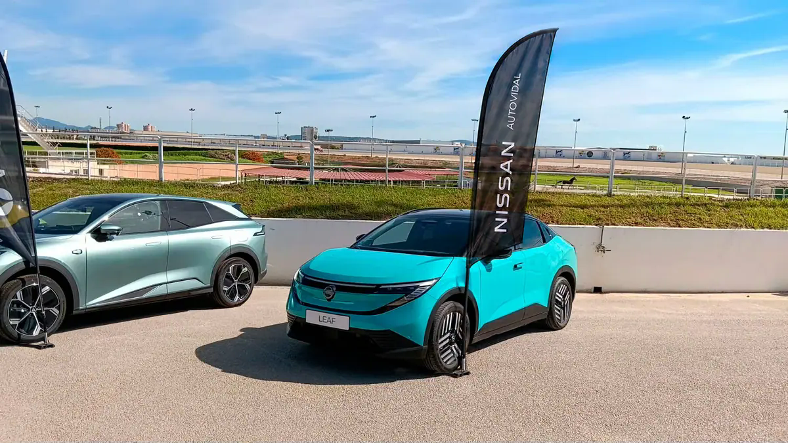

01 / Nissan × AutovidalUna gama,
Una gama,
una presencia.
Creatividad de comunicación para Nissan Autovidal, junto a una activación de marca en el Hipódromo.
CampañaActivaciónAutomoción
Comunicación de gamaNissan / Autovidal

Presencia de marca en eventoFotografía de activación